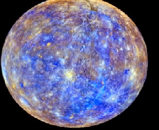

Mercúrio
Mercúrio é o menor e mais interno planeta do Sistema Solar, orbitando o Sol a cada 87,969 dias terrestres. A sua órbita tem a maior excentricidade e o seu eixo apresenta a menor inclinação em relação ao plano da órbita dentre todos os planetas do Sistema Solar.

Curiosidade de Mercúrio
Ao contrário da maioria dos planetas, Mercúrio não é geologicamente ativo. Por isso, ele não consegue se recuperar dos impactos com asteroides e cometas, fazendo com que sua superfície seja coberta de crateras.